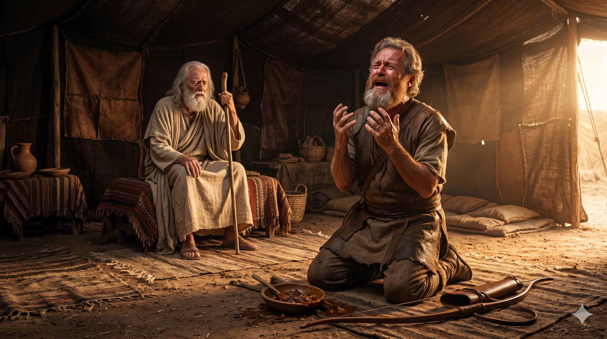

눈이 어두워진 이삭 앞에 염소 가죽을 두른 손을 내미는 야곱 — 거짓이 장막에 드리운 그림자
이삭이 이르되 네 아우가 와서 속여 네 복을 빼앗았도다 에서가 이르되 그의 이름을 야곱이라 함이 합당하지 아니하니이까 그가 나를 속임이 이것이 두 번째니이다 전에는 나의 장자의 명분을 빼앗고 이제는 내 복을 빼앗았나이다 … 이삭이 심히 크게 떨며 이르되 그런즉 사냥한 고기를 내게 가져온 자가 누구냐 네가 오기 전에 내가 다 먹고 그를 위하여 축복하였은즉 그가 반드시 복을 받을 것이니라 — 창세기 27:35–36, 33
이삭은 나이 들어 눈이 어두워지자 죽기 전에 맏아들 에서에게 축복을 내리려 합니다. 그러나 태중에서 이미 "큰 자가 어린 자를 섬기리라"는 하나님의 말씀이 있었음에도(창 25:23), 이삭은 인간적 편애와 미각의 즐거움에 따라 에서를 선택했습니다. 리브가는 야곱을 편애하여 속임수를 계획했고, 야곱은 아버지의 눈과 귀와 손을 모두 속이며 형의 축복을 가로챘습니다. 이 한 장면 안에는 이삭 가족 네 사람 모두의 죄와 연약함이 고스란히 드러납니다. 편애하는 부모, 속이는 자식, 자신의 권리를 가볍게 여긴 형 — 인간의 모든 어긋남이 한 장막 안에서 펼쳐집니다.
그러나 이삭이 "그가 반드시 복을 받을 것이니라"고 선언하는 순간은 깊은 영적 전환점입니다. 속임을 당한 사실을 알고 심히 떨던 이삭은, 그러나 자신이 선포한 축복을 철회하지 않았습니다. 왜일까요? 그는 그 떨림 속에서 자신의 뜻을 넘어서는 하나님의 뜻이 이루어졌음을 깨달았기 때문입니다. 하나님은 이삭의 편애와 야곱의 속임수, 그 일그러진 인간사 한가운데에서도 당신의 약속을 잃지 않고 성취하셨습니다. 인간의 죄가 하나님의 계획을 막지 못합니다 — 오히려 하나님은 그 깨어진 조각들을 통해 구원 역사를 이어가십니다. 이것이 섭리의 신비입니다.

뒤늦게 장막에 들어와 통곡하는 에서 — 잃어버린 축복 앞의 절규
이삭의 가정은 오늘날 우리의 가정을 비추는 거울입니다. 부모가 자녀를 편애할 때 가정에는 눈에 보이지 않는 균열이 생기고, 형제 사이에는 평생 지울 수 없는 상처가 남습니다. 이삭이 에서를, 리브가가 야곱을 편애한 결과는 야곱이 형을 피해 20년간 도망자의 삶을 살아야 했다는 것입니다. 당신의 가정 안에 혹시 편애의 그림자가 있지 않습니까? 자녀 한 명에게 기울어진 사랑, 은근한 비교, 말로 드러나지 않아도 느껴지는 선호 — 이것이 자녀들의 마음에 어떤 자국을 남기는지 되돌아보십시오.
동시에 이 본문은 우리 인생의 얽히고설킨 실패를 향해 놀라운 위로를 줍니다. 당신의 가정에 이미 깊은 상처와 속임과 편애가 있었다 해도, 하나님은 그 깨어진 자리를 통해서도 당신의 뜻을 이루실 수 있는 분이십니다. 이삭의 이야기는 "완벽한 가정만이 하나님께 쓰임 받는다"고 말하지 않습니다. 오히려 실패한 가정 한가운데서도 구원의 계보가 이어집니다. 포기하지 마십시오. 하나님의 섭리는 당신의 가정의 균열보다 크십니다.
이삭의 장막은 편애와 속임수로 얼룩졌지만, 하나님의 섭리는 멈추지 않았습니다.
당신 가정의 균열을 부끄러워 숨기지 마십시오 — 하나님은 그 틈 사이로 일하십니다.
완벽함이 아니라 하나님의 은혜가 구원의 이야기를 이어갑니다.